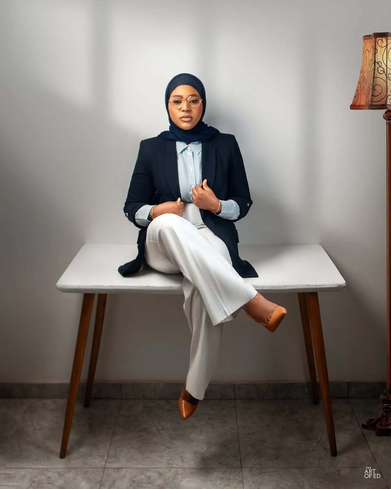
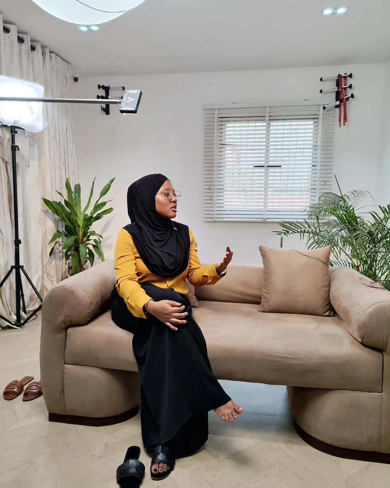

Hauwa Ojeifo: Nigeria’s Unstoppable Voice for Mental Health
Imagine a world where silence means death and stigma builds walls stronger than iron. Now imagine one courageous woman—Hauwa Ojeifo—who shattered that silence with a whisper that became a roar, igniting a mental health revolution in Nigeria. This is more than a story; it is a masterstroke of courage, a canvas painted with her struggles-turned-strength.
From Darkness to Dawn: A Journey of Raw Courage
In 2014, Hauwa endured sexual violence and into 2016, she grappled with bipolar disorder, PTSD, and psychosis, her mind a stormy sea. She teetered on the precipice of despair, and “considered taking her own life”.
Yet rather than sink into quiet misery, she took an unexpected turn: she spoke. “Keeping quiet was literally a life‑or‑death situation,” she reflected.
In that brave confession, she found not breakdown, but breakthrough.

She Writes Woman: A Movement Born of Hope
What began as a candid blog in April 2016 morphed into She Writes Woman, a women-led movement fueled by lived experience. Hauwa’s blueprint for change was simple but radical: give mental health a voice, normalize the conversation, and build systems of support.
She didn’t stop there. She established Nigeria’s first 24/7 private mental health helpline, connecting callers to trained minds for emergency intervention via these brave first responders. She also launched Safe Place, an anonymous women-only support group, meeting monthly in Lagos, Abuja, Ibadan, and Kaduna, lifting the isolation from over 900 women and girls.
Through She Writes Woman, Hauwa has touched the lives of over 15,000 Nigerians—offering 1,900+ helpline calls answered and 131+ hours of free therapy. Many found solace; many found life.
Advocacy at the Gates of Power: When Words Became Legacy
Hauwa didn’t just supplant whispers; she stormed the halls of power. In February 2019, she became the first person living with mental health conditions to testify before Nigeria’s House of Assembly, demanding rights-based mental health legislation
She then took her message to the global stage—opening the 14th UN Conference of State Parties on the Rights of Persons with Disabilities, directing delegates to rebuild systems with inclusion at their core
In February 2020, standing in solidarity with Human Rights Watch, she became a voice for the voiceless, the first to testify publicly on the rights of persons with psychosocial disabilities
A Gallery of Triumphs and Tributes
- Queen’s Young Leaders Award (2018): Nigeria’s only female recipient that year
- MTV EMA Generation Change Award (2018): The inaugural winner in Bilbao, honored for elevating mental health and sexual violence narratives
- Obama Foundation Leaders (2019): Her visionary leadership recognized at the highest levels
- Goalkeepers Changemaker Award (2020): Awarded by the Bill & Melinda Gates Foundation for inspirational, lived-led change
- Marca Bristo Fellowship (2020): Honored by Human Rights Watch for her disability and mental health rights advocacy
- Time’s Next Generation Leader (2024): Chosen to spearhead mental health discourse in Africa and beyond
The Ripple Effect: Lives Uplifted, Stigma Undone
Hauwa’s impact isn’t in accolades; it’s measured in lives.
- A lone woman in Lagos, too ashamed of her trauma, found refuge in a Safe Place circle. She discovered she wasn’t broken—she was human, and she could heal.
- A student in Abuja, weighed down by academic stress and isolation, found a 3 AM voice on the helpline that said, “I hear you,” and kept her going.
- In remote towns, survivors of sexual violence learned they didn’t have to stay silent—someone powerful was echoing their pain until it was heard.
Painting the Mind with Words: A Raymond Reddington–Inspired Crescendo
Allow the artistry of language to sweep you away:
This is not a mere biography; it is a symphony of human will. Hauwa composed her pain into a crescendo, conducting a movement that hums with empathy and consequent policy. She cracked the lock on Nigeria’s national psyche, and in those cracks, rays of hope now shine.
Her story is a roller‑coaster of devastation, courage, action, and triumph. It’s a masterclass in alchemy: transforming leaden scars into golden systems, turning solitary screams into nationwide dialogues.
A Clarion Call: You Are Next
Dear reader, let this be a manifesto. Make it your north star. Because:
- You have lived pain that can seed empathy.
- You have seen walls that can become doorways.
- You have a voice—don’t herd it into silence.
Let Hauwa’s example be the ember that sets ablaze your own calling. Whether you change laws, comfort a soul, or simply speak up—it matters. Because change is never a monument; it is a movement.
In Closing
Hauwa Ojeifo didn’t just break the silence—she turned it into a chorus. She didn’t just challenge stigma—she outlawed it. She didn’t just help—she pioneered.
Her journey is a masterpiece in motion—proof that one person’s truth can sculpt a nation’s transformation. She stands tall, on a pedestal of purpose, her flowers in full bloom—singed with praise, watered by gratitude.
Let her story be the spark and the blueprint. And remember: you, too, are a changemaker in waiting.